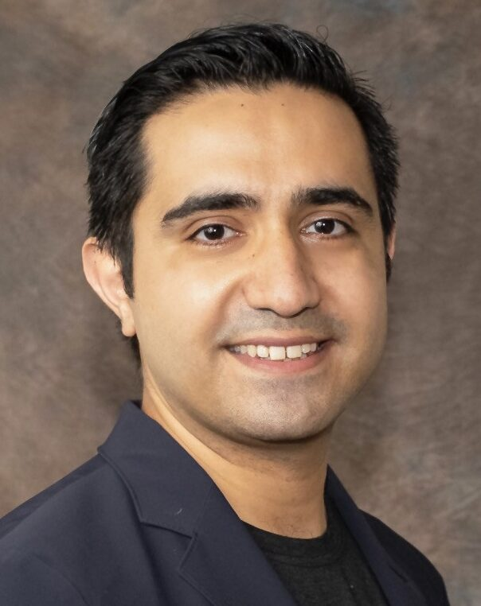
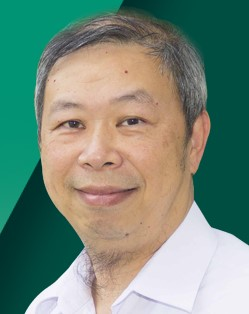
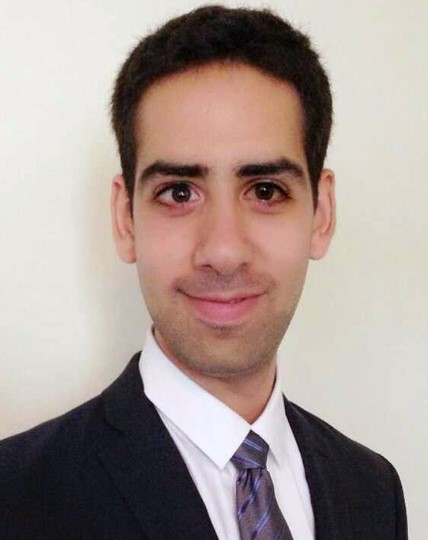
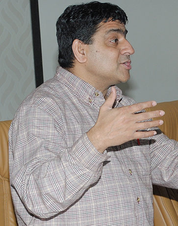
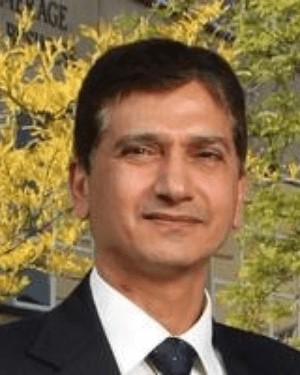

People
The Center for Cryptographic Research brings together faculty across mathematics, computer science, engineering, and information systems working on cryptography, coding theory, quantum information, and security.
Core Faculty

Jean-François Biasse
Professor, Mathematics
Research in the mathematical foundations of cryptography, including post-quantum cryptography and quantum algorithms. Recipient of the NSF CAREER Award and supported by NSF, NIST, CyberFlorida, and the Simons Foundation.

Giacomo Micheli
Associate Professor, Mathematics
Research spans number theory and applied algebra, with applications to cryptography and coding theory. Recipient of the NSF CAREER Award. Previously held research positions at MIT, Oxford, and EPFL.

Attila Yavuz
Associate Professor, Computer Science
Research focuses on practical cryptography and secure systems. Recipient of the NSF CAREER Award with projects supported by NSF, DOE, and industry.

Mehran Mozaffari Kermani
Associate Professor, Computer Science & Engineering
Director of the Cryptographic Engineering and Hardware Security Lab, working on hardware security and cryptographic implementations.
Affiliated Faculty

Rouzbeh Behnia
Assistant Professor, Information Systems
Research in privacy-preserving systems, post-quantum cryptography, authentication protocols, and security of AI models.

Kwang-Cheng Chen
Professor, Electrical Engineering
Research in quantum communications, quantum computing systems, and wireless networks. IEEE Fellow and AAIA Fellow.

Robert Karam
Assistant Professor, Computer Science
Research in hardware security and reconfigurable computing, including side-channel security and FPGA systems.

Lukas Koelsch
Assistant Professor, Mathematics
Research in algebra, combinatorics, and number theory with applications to coding theory and cryptography.

Hemant Pendharkar
Professor, Mathematics
Research includes lattice-based cryptography and computational mathematics. Senior personnel of the NSF REU Site program.

Dmytro Savchuk
Professor, Mathematics
Research in computational group theory and its applications to cryptography. Co-PI of the NSF REU Site in Cryptography and Coding Theory.

Ruthmae Sears
Professor, Mathematics Education
Research in STEM education and inclusive pedagogy. Pedagogical lead for the CodeBreakHERs outreach program.

Shivendu Shivendu
Associate Professor, Information Systems
Research in blockchain, FinTech, and economics of information systems.
Kaiqi Xiong
Professor, Mathematics & Engineering
Research in cybersecurity, networking, and cryptography with applications to big data systems.